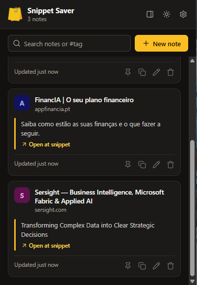
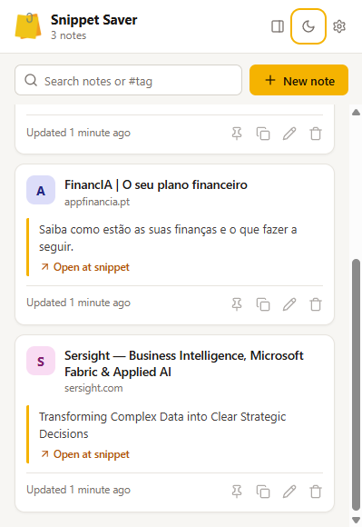

Save the web,
one snippet at a time.
Snippet Saver is a free Chrome extension that keeps the bits of the web you want to remember. Select text or right-click an image, and it goes straight into a searchable note, with a link back to the exact passage.
Get it on the Chrome Web Store Free · No account · No ads · No tracking

Save in one step
Right-click selected text or an image, or press Alt+Shift+S. Every snippet keeps its page title and a link back to the passage.
Find it again
Search all your notes, filter by #tag and pin the ones you use most. Write your own notes in Markdown, too.
Beside your reading
Open your notes in Chrome's side panel, next to the article or documentation you're working with.
Your data stays yours
Notes stay in your browser, or in a private folder of your own Google Drive if you turn on sync. There is no Snippet Saver server.